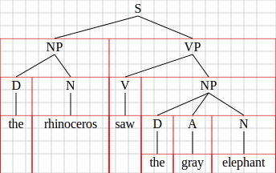
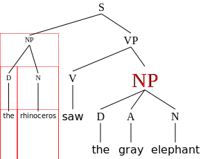

Code
import svgling, svgling.html, svgling.figure
from svgling.figure import SideBySide, RowByRow, Captionsvgling Manualimport svgling, svgling.html, svgling.figure
from svgling.figure import SideBySide, RowByRow, Captionsvgling tree-drawing packagesvgling package version: 0.4.1-a1
This document is a detailed guide to using the svgling package; svgling is primarily a python tree-drawing package, aimed at linguists and computer scientists who want to draw constituent trees. It is tailored specifically towards rendering trees in Jupyter, but can be used for programmatically generating SVG and HTML tree diagrams in general – one major external interface for doing this is via the nltk package. Beyond SVG constituent trees, svgling additionally supports a number of other diagram features useful to linguists, and it supports easy exporting to raster images.
The main interface to svgling is svgling.draw_tree. This function takes a tree description, and named arguments specifying options. The valid options are described below, and options parameters are used to construct a svgling.core.TreeOptions object; such an object can be passed directly and passed via a named argument options. The default options can be accessed via svgling.core.TreeOptions(). Here are two examples of how to specify a tree structure, together with how that tree structure will render:
t0 = ("S", ("NP", "D", "N"), ("VP", "V", ("NP", "D", "A", "N")))
svgling.draw_tree(t0)t1 = ("S", ("NP", ("D", "the"), ("N", "rhinoceros")),
("VP", ("V", "saw"),
("NP", ("D", "the"), ("A", "gray"), ("N", "elephant"))))
svgling.draw_tree(t1)
The tree description can be in one of two forms: (i) an indexable object (e.g. list, tuple) consisting of a head at index 0 and a possibly empty sequence of subtrees at indices \(1..n\), or (ii) an object implementing the nltk.tree.Tree api (including nltk Tree objects themselves); this api stores the head label in the function .label() and the daughter subtrees as indices on the object. See t0 and t1 above for examples of the indexable format, but this is pretty standard notation going back to lisp, and corresponds directly to linearized trees in linguistics notation.
The package integrates with nltk if available, and by default, nltk will attempt to use svgling to render tree structures when displayed directly in the notebook. Rendering options for trees displayed this way can be adjusted by setting values on svgling.core.default_options, which is a svgling.core.TreeOptions instance. nltk.tree.Tree objects can also be passed directly to draw_tree. This leads to a third way to provide a tree description for rendering, by using the Tree.fromstring function:
import nltk
t2 = nltk.Tree.fromstring("(S (NP (D the) (A gray) (N elephant)) (VP (V saw) (NP (D the) (N rhinoceros))))")
t2NLTK integration is discussed in more detail below.
Many options through this document interact with SVG formatting, via arguments pass to the svgwrite API. I won’t specify the details of this here, see the svgwrite docs for details. Generally, svgwrite formatting parameters are validated and passed transparently through to svg itself with the python _ character turned into -, so for details of how svgwrite parameters are interpreted, also see the SVG specification (and whatever viewer-specific documentation there is - not all SVG renderers are alike). I have generally not passed through all parameters, but rather chosen a few that I think are the most useful. Two key parameters that show up repeatedly for lines are stroke (which gets filled in with a color or none) and stroke_width (which gets filled in with a measurement, usually in user units for svgling trees).
Units: SVG uses CSS-style units, which can be a little confusing. Here’s a quick reference primer on the ones that will come up in this manual.
user units: the default internal unit of an SVG diagram. For svgling trees, at their default sizing, 1 is equivalent to 1px. However, trees may be resized depending on the display context.px: stands for “pixel”, but does not necessarily correspond literally to a pixel in CSS; the interpretation is more abstract. The increment 1px corresponds to an optical reference unit that is the smallest object likely to be visible on a screen. Some but not all displays can render objects that are less than 1px.em: the height of one line of text, at the current font size, from baseline to baseline.%: percentage of the immediately containing SVG box.pt: a unit inherited from print typography, but again in CSS this is interpreted kind of abstractly and won’t really correspond to any reliable physical distance (what you might expect from the history). Not recommended for screen-oriented rendering. For css and svg, 1pt = 0.75px (so 12pt = 16px, for the most useful special case).Nodes: A tree node is (for now) just a string. This string may span multiple lines, which are separated by \n. For example: "N\ncat" gives a two-line node with N as the first line and cat as the second. Within a node, multiple lines are anchored at the middle (leading to centering). A label consisting of the empty string "" is considered empty, and will not render at all – the lines will be joined in the middle of the row height. If you want a blank label, any sequence of whitespace will work, e.g. " ".
svgling.draw_tree("DP", "D\nthe", ("AP", "A\ngray"), ("NP", "N\ncat"))
Selecting nodes and constituents: For various purposes discussed throughout this manual, you can select particular parts of a tree (usually nodes or constituents) for formatting. To do this, you use what is sometimes called a tree path. These are sequences of indices that traverse the tree from the root node by choosing a daughter in left-to-right order. Indices begin at 0.
So for example, the path (0,1,1) gives the second daughter of the second daughter of the first daughter of the root node. The empty path () gives the subtree headed at the root. As this example illustrates, a path needn’t be complete, and for annotation purposes will typically be interpreted as selecting an entire constituent, though for some purposes it may select a node. As a reminder, a length 1 path written as a tuple will require a comma so that python can disambiguate it from just a regular number in parenthesis, e.g. (0,). A path that selects a daughter node whose index is greater than the number of daughters at that point in the tree is invalid. Using negative indices is possible, and these will be interpreted like negative indices in python: e.g. -1 selects the rightmost node, etc.
The following diagram illustrates some example valid tree paths as python tuples.
svgling.draw_tree(("()", ("(0,)", ("(0,0)", "(0,0,0)"), ("(0,1)", "(0,1,0)", "(0,1,1)")),
("(1,)", "(1,0)", ("(1,1)", "(1,1,0)"), ("(1,2)", "(1,2,0)", ("(1,2,1)", "(1,2,1,0)")))),
font_style=svgling.core.MONO, average_glyph_width=1.5)Relative to the above tree, the paths (2,) and (1,0,0) would (for example) be invalid. The paths (-1,-1,-1) and (-1,2,-2) (for example) would select the subtree identified by (1,2,1) and (1,2,0) respectively.
An invalid path will result in an IndexError exception.
The svgling.draw_tree function can handle nltk.Tree objects (or any object using the same API) transparently. By default, the nltk package on recent versions also implements _repr_svg_() using svgling, and so nltk Trees will render using this package.
import nltk
# repeated from earlier:
t2 = nltk.Tree.fromstring("(S (NP (D the) (N elephant)) (VP (V saw) (NP (D the) (N rhinoceros))))")
t2You can also supply Tree objects directly to draw_tree, which allows you to style them in more complex ways:
svgling.draw_tree(t2, leaf_nodes_align=True)
n.b. I’m not aware of any way to get fromstring to allow multi-line leafs, so if you want to do this in nltk, you’ll need to construct the tree more directly. (You can supply options for trees drawn this way as usual.)
from nltk import Tree
svgling.draw_tree(Tree('DP', ['D\nthe', Tree('NP', ['N\ncat'])]), leaf_nodes_align=True)The rendering options for trees rendered this way can be customized via svgling.core.default_options. This object is created as a default svgling.core.TreeOptions(), so accepts all the options documented in this manual.
svgling.core.default_options.leaf_nodes_align = True
t2
svgling.core.reset_defaults()
t2The svgling.figure utility classes documented in 5. Hybrid HTML/SVG diagrams support nltk Trees directly, and supports mixing of these objects and svgling renderable objects:
import svgling.figure
svgling.figure.Caption(svgling.figure.SideBySide(svgling.draw_tree(t0), t1, padding=32),
"Fig 1: Skeleton and instantiated tree")The customizable TreeOptions parameters are described in the rest of this section.
Vertical layout: A node at depth \(n\) (where the root node of the tree is depth \(0\)) is positioned vertically in a line with all other nodes of depth \(n\). Exception (see below for examples): if leaf_nodes_align is set to true, any leaf nodes are aligned with the lowest level of the tree, rather than depth they would otherwise be at. Within a row, vertical space is allowed for the tallest node at that depth; positioning of shorter nodes at that depth is configurable. Vertical spacing is calculated/generated in ems.
Horizontal layout: The horizontal position of daughter nodes relative to a parent is determined by a (configurable) algorithm, usually based on some measure of the size of the daughter nodes. By default, this algorithm estimates the max text width taken up by the parent node label or the width of daughter nodes (and their daughters, etc). See below for examples of other options. No node will be positioned vertically below a node that does not dominate it. There is also a configurable padding parameter. Horizontal spacing is calculated initially in estimated ems, but (canvas width aside) is converted to percentages for svg layout. Because svgling does not do multi-pass rendering, it uses heuristics for glyph width rather than accurately calculating glyph width. (To do this, you’d basically need to render to a device, and see what happens.)
Canvas layout: The canvas width is estimated from node text width + padding. The canvas height is determined by the tree depth, level heights, with an extra 1em at the bottom of the canvas for descenders from leaf node glyphs.
debug: When this option is set to True, the rendered will show a 1em grid, as well as a red box for every subtree. This can be useful if something isn’t doing what you expect. Several of the documentation examples below use this to illustrate various spacing options.
svgling.draw_tree(t1, debug=True)relative_units: When this option is set to False, do not use relative units in the generated svg (e.g. no ems). This will instead use px values generated from the local font options. This is not guaranteed to work in general, but it should at least work with standard cases where there is no complicated font manipulation. This option is designed for compatibility with Inkscape.
svgling.draw_tree(t1, relative_units=False)The following are TreeOptions parameters that affect layout.
horiz_spacing: This parameter determines how daughter nodes are spaced horizontally relative to the parent. Possible values are svgling.core.HorizSpacing.TEXT (default; space proportionally based on estimated text width), svgling.core.HorizSpacing.EVEN (space evenly based on number of immediate daughters), and svgling.core.HorizSpacing.NODES (space proportionally to the number of leaf nodes in the subtrees).
Usually TEXT looks best, but the other two may be preferable for abstract trees where label widths are all similar. Without manual adjustment, the two other options will deal poorly with long labels.
examples = list()
demo_trees = [t0, t1]
for opt in svgling.core.HorizSpacing:
row = list()
for t in range(len(demo_trees)):
# debug mode on so that the exact rendering differences are very obvious
row.append(Caption(svgling.draw_tree(demo_trees[t], horiz_spacing=opt, debug=True), "Example t%d with horiz_spacing=%s" % (t, str(opt))))
examples.append(SideBySide(*row))
RowByRow(*examples)
average_glyph_width: A heuristic factor used to calculate text widths; basically, a divisor in ems. Defaults to 2.0. Does not generally need to be adjusted for default settings (which try to just use Times), but may be worth adjusting for custom fonts.
leaf_padding: An amount to pad each leaf by, in glyphs. Will be divided by average_glyph_width. Default is 2. Negative values are possible, but will usually result in text being cut off. Leaf padding is applied as a constant to the overall canvas size regardless of the value of horiz_spacing (i.e. the canvas size is always determined by the sum of node widths plus leaf padding at every widest subtree), so will impact spacing to some degree for any setting of this option, but is only applied directly to each leaf for HorizSpacing.TEXT.
examples = list()
for i in (0, 2, 5, -2):
examples.append(Caption(svgling.draw_tree(t1, leaf_padding=i), "Example t1 with leaf_padding=%g" % i))
RowByRow(*examples)vert_align: How row alignment when there are multi-line labels should be calculated. If all labels in a row have the same height, this has no impact, but if there are differences, it controls the position of the shorter node labels vertically. Default is centered. For empty labels, this affects the position of the line join. The values TOP, CENTER, and BOTTOM are self-explanatory. svgling.VertAlign.EVEN causes all nodes to be treated as the same height (relative to their row) regardless of text contents, even empty nodes.
t4 = ("X", ("multiline\nlabel", "Y"), ("", "Z\nA"), ("A", "B"), "C")
examples = list()
for opt in svgling.core.VertAlign:
examples.append(Caption(svgling.draw_tree(t4, vert_align=opt), "Example t4 with vert_align=%s" % str(opt)))
RowByRow(*examples)
distance_to_daughter: The distance between rows in ems – that is, distance from the bottom of one row to the top of another. Values less than about 0.5 are not recommended and will usually result in rendering oddities. Note that line starts are 0.2ems below a node label, so 0.2 will give completely horizontal lines (not 0.0).
Default is 2.
examples = list()
for i in (0.5, 2, 4, 0.2):
examples.append(Caption(svgling.draw_tree(t1, distance_to_daughter=i), "Example t1 with distance_to_daughter=%g" % i))
RowByRow(*examples)leaf_nodes_align: if true, will align all leaf nodes with the lowest depth leaf nodes in the tree.
SideBySide(svgling.draw_tree(t1, leaf_nodes_align=True), svgling.draw_tree("DP", "D\nthe", ("AP", "A\ngray"), ("NP", "N\ncat"), leaf_nodes_align=True))descend_direct: When an edge skips levels (currently only possible for leaf nodes, when leaf_nodes_align=True), should the line go directly from the parent to the daughter? If False, the line will go to the position that the daughter would have been at as if there is an empty node there, and descend vertically. This can be useful for very deep trees where a True value results in overlapping, and also just look better. However, it doesn’t allow distinguishing empty nodes visually in the tree. As with empty nodes, the positioning of the line join is affected by vert_align. Defaults to True.
The following example shows a tree that renders quite badly without this option set to True, because of the asymmetry between leaf node widths.
t4 = ("A", "B", ("C", ("D", "middle leaf"), "H"), ("E", "long leaf", "G"))
examples = list()
for opt in (True, False):
examples.append(Caption(svgling.draw_tree(t4, leaf_nodes_align=True, descend_direct=opt), "Example t4 with descend_direct=%s" % str(opt)))
SideBySide(*examples)Custom styles can be applied to specific edges. The main application for this is drawing so-called “triangles of laziness”, but it does also allow you to change the color of particular edges and other related things. There is currently no way to change the edge styles for a tree as a whole (I’ll implement such a thing if there’s demand for it). Be aware that non-direct descents are implemented as an edge style, so if you apply a style to a leaf node with leaf_nodes_align=True, then it can override the indirect descent style; use the IndirectDescent class to avoid this.
There are three classes that encapsulate edge styles: * svgling.core.EdgeStyle is the default edge style. It allows two svg parameters: stroke and stroke_width. * svgling.core.IndirectDescent implements indirect descents for nodes that skip levels. It inherits the svg parameters of EdgeStyle. * svgling.core.TriangleEdge draws a triangle with points at the center of the parent, and the left and right bounds of the daughter text. (Note that, as usual, text width is calculated heuristically.) This class also inherits the svg parameters of EdgeStyle.
To set an edge style, call set_edge_style on the layout object with a path and one of the above objects. This function (and most that annotate or modify the style of a tree) modifies a tree object in place, but it also returns self in order to allow repeated styling calls, as in the following example:
t5 = ("S", ("NP", "The subject of this sentence"), ("VP", "is collapsed"))
# repeated styling calls without an intermediate assignment:
out = (svgling.draw_tree(t5)
.set_edge_style((0,0), svgling.core.TriangleEdge())
.set_edge_style((1,0), svgling.core.TriangleEdge()))
# now for some gratuitous formatting. Let's use a simpler assignment style for this one:
out.set_edge_style((0,), svgling.core.EdgeStyle(stroke_width=4, stroke="red"))
out.set_edge_style((1,), svgling.core.EdgeStyle(stroke_width=4))
outGiven a tree object with arbitrary styling, you can obtain a default-styled instance of the tree by calling reset(). This function returns a copy, and does not modify the original.
out.reset()font_style: a css-formatted string that will be used to style text in the tree. Since this is css, you can put all sorts of stuff in it, but I recommend at least including font-family, font-weight, and font-style, because without these font rendering may be inconsistent depending on where the svg is embedded (for example showing as serif in some settings, sans-serif in others). If you are sharing your svg with others, I recommend sticking to web-safe fonts, with fallbacks. The default values is: "font-family: times, serif; font-weight:normal; font-style: normal;". You cannot set font size this way.
A convenience function, svgling.core.cssfont takes a family and an optional named weight and style parameter and produces these strings. In addition, svgling.core.SERIF (the default), svgling.core.SANS, and svgling.core.MONO provide some useful presets.
font_size: a numeric value, to be interpreted in user units, for the font size. At the default sizing, 1 user unit corresponds to 1px; SVG diagrams may be resized arbitrarily so changing the font size does not in general guarantee a bigger diagram, but it usually does. The default is 16 (which corresponds to 12pt at the default scaling).
text_color: change the color of text in a tree. This option takes css color values. See css documentation for more on what the valid options are.
t1 = ("S", ("NP", ("D", "the"), ("N", "rhinoceros")), ("VP", ("V", "saw"), ("NP", ("D", "the"), ("A", "gray"), ("N", "elephant"))))
styles = (("font-family: georgia, times, serif; font-weight:normal; font-style: normal;", 26, "black"),
("font-family: sans-serif; font-weight:normal; font-style: normal;", 16, "red"),
(svgling.core.cssfont("impact, times, serif", style="italic"), 12, "#FF69B4"))
examples = list()
for i in range(len(styles)):
examples.append(Caption(svgling.draw_tree(t1, font_style=styles[i][0], font_size=styles[i][1], text_color=styles[i][2]),
"Example t1 with style %d" % i))
RowByRow(*examples)A limited amount of per-node styling is possible, via the functions set_subtree_style, set_node_style, and set_leaf_style on an existing tree. The first two of these take a tree path and some options, and the third just takes options. These currently allow changing only the font size, style, and color, and turning on debug mode for part of the tree.
Caveats: * The tree layout is still primarily determined by the global font size. In particular, the distance_to_daughter option is always interpreted relative to that font size. So if you are changing many nodes, it can make sense to adjust the global tree font size as well. * Adding per-node styling will reset any existing tree annotations, so you will need to apply annotation calls after node styling calls.
out = svgling.draw_tree(t1)
out.set_leaf_style(font_style = svgling.core.cssfont("impact, times, serif", style="italic"))
out.set_node_style((1,1), font_size=30, text_color="red")
out.set_subtree_style((0,), font_size=10, debug=True)
outThe draw_tree function returns a TreeLayout object which can be further manipulated by adding what are called annotations. These are extra graphics that overlay on the tree, and typically interact with the tree’s structure. These annotations make heavy use of tree paths, discussed in section 1.
If you want to highlight a specific constituent, you can draw a box around it, and/or underline it.
(svgling.draw_tree(t1)
.underline_constituent((0,))
.underline_constituent((1,1)))Both of these functions accept a number of extra svg arguments determining the details of the annotation. For box_constituent, you can pass stroke, stroke_width, fill, fill_opacity, and rounding. For underline_constituent you can pass stroke, stroke_width, and stroke_opacity. As can be seen above, boxes default to light non-opaque gray with rounded edges, and no stroke.
Movement arrows can be drawn between arbitrary constituents; svgling will attempt to keep them from overlapping with each other or with the tree. The arrow always starts below the center of the first constituent, descends, moves horizontally, and attaches vertically to the center of the second constituent. It can be convenient to combine arrows with some kind of constituent-grouping annotation, for complex constituents. The following example illustrates movement arrows in a typical case of Quantifier Raising.
t4 = ("TP", ("DP", ("D", "every"), ("NP", ("N", "cat"))),
("TP", "1", ("TP", ("DP", ("D", "some"), ("NP", ("N", "dog"))),
("TP", "3", ("TP", ("DP", "t1"), ("VP", ("V", "likes"), ("DP", "t3")))))))
(svgling.draw_tree(t4)
.movement_arrow((1,1,1,1,0), (0,))
.underline_constituent((0,))
.movement_arrow((1,1,1,1,1,1), (1,1,0), stroke_width=1, stroke="black")
.underline_constituent((1,1,0)))As several of the above examples illustrate, svgling.figure provides facilities for generating more complex figures out of svg drawings. These classes are still rather basic, and they don’t do well for really arbitrary figures, but they do well enough for combining svgling trees together. In principle, they work on any object that implements the following functions:
get_svg(): return an svgwrite object.height(): get the intended diagram height in px.width(): get the intended diagram width in px.All the classes described here implement this interface, and so may be combined. See the above text for examples of all three of these classes. These figure classes all use a viewbox, so the sub-diagram’s reported dimensions are used in user units, and the complex figure reports its own height/width in px.
If an object does not support get_svg(), the svgling.caption objects will attempt to convert it to a tree via svgling.draw_tree. The primary use case for this is so that nltk objects can be easily put in figures. (A surprising number of text-like objects also do work this way.)
Caption: This places a text caption below an svg drawing. Construct with Caption(fig, text).
SideBySide: This places a list of svg drawings in a row. Construct with SideBySide(fig1, fig2, ..., fign, padding=x), where padding gives a padding in pixels to be applied between subfigures and in the left and right margin.
RowByRow: This places a list of svg drawings in a column. Construct with RowByRow(fig1, fig2, ..., fign, padding=x), where padding gives a padding pixels to be applied between subfigures and in the top and bottom margin. By default, if the rows are themselves SideBySide objects, this will adjust the widths so that individual diagrams form a grid. To disable this, pass gridify=False to the constructor.
svgling.semantics.DoubleBrackets: There is so far one linguistics-specific complex figure class, which produces semantics-style double brackets around a tree. Simply call this with a tree layout object to get decent results. You can also adjust padding (including negatively) and bracket_width. Here’s an example from Heim and Kratzer 1998, ch. 2:
import svgling.semantics
svgling.semantics.DoubleBrackets(svgling.draw_tree("S", ("NP", ("N", "Ann")), ("VP", ("V", "smokes"))))import nltk
# illustrate direct use of an nltk.Tree object
svgling.semantics.DoubleBrackets(nltk.Tree.fromstring("(S (NP (D the) (N elephant)) (VP (V saw) (NP (D the) (N rhinoceros))))"))
This package provides limited support for tree diagrams that mix HTML/CSS and SVG, using the former for layout and the latter for line drawing, via the svgling.html module. These have a number of limitations relative to pure SVG diagrams, with two main advantages: (i) the nodes can consist of arbitrary HTML/CSS, including mathjax, xml.etree.ElementTree objects, and more and (ii) sizing of the overall tree diagrams is fully automatic based on leaf node sizes. The limitations are detailed below, but the main one to know about is that these trees do not support branching greater than binary. As with the rest of this package, the hybrid layout techniques are single-pass and make do without any javascript. The rendering techniques require up-to-date and recent browsers. At the moment, these trees are less intended for direct instantiation and more intended for programmatic use.
The module interface is similar, with svgling.html.draw_tree as the main interface function, and svgling.html.DivTreeLayout as the main class parallel to svgling.core.TreeLayout, and svgling.core.TreeOptions used to configure the tree (though see below for supported parameters). After the following examples, I will give a precise list of the limitations relative to SVG diagrams and the supported options.
First, an example of the default output for one of our standard examples:
svgling.html.draw_tree("S", ("NP", ("D", "the"), ("N", "elephant")), ("VP", ("V", "saw"), ("NP", ("D", "the"), ("N", "rhinoceros"))), horiz_spacing=svgling.core.HorizSpacing.TEXT)The HorizSpacing.EVEN option can be used, but usually looks huge for unbalanced trees. (With comparable node padding, for this option only the spacing is identical to svgling.core.)
svgling.html.draw_tree("S", ("NP", ("D", "the"), ("N", "elephant")), ("VP", ("V", "saw"), ("NP", ("D", "the"), ("N", "rhinoceros"))), horiz_spacing=svgling.core.HorizSpacing.EVEN)The main immediate benefit for interactive use is the availability of MathJax in nodes. (caveat: latex rendering via HTML outputs will not work in Google Colab or VSCode.) Don’t forget to escape \ characters (as \\) as needed, or use strings prefixed with r for “raw” mode:
svgling.html.draw_tree("$\\text{Saw}(\\iota x_e{:\:}\\text{Elephant}(x),\\iota x_e{:\:}\\text{Rhino}(x))$", ("$\\iota x_e{:\:}\\text{Elephant}(x)$", "$\\lambda f_{\\langle e,t \\rangle }{:\:}\\iota x_e{:\:}f(x)$", "$\\lambda x_e{:\:}\\text{Elephant}(x)$"), ("$\\lambda x_e{:\:}\\text{Saw}(x,\\iota x_e{:\:}\\text{Rhino}(x))$", "$\\lambda y_e{:\:}\\lambda x_e{:\:}\\text{Saw}(x,y)$", ("$\\iota x_e{:\:}\\text{Rhino}(x)$", "$\\lambda f_{\\langle e,t \\rangle }{:\:}\\iota x_e{:\:}f(x)$", "$\\lambda x_e{:\:}\\text{Rhino}(x)$")))The recommended method of drawing multi-line nodes when using hybrid rendering is to use the html <br /> tag. In some versions of MathJax, using \\ in math mode may work, though it will not center text. To simplify this, the package provides a convenience function multiline_text that uses HTML to do the linebreaks. (See the gallery for the full example rendered using this technique.)
import svgling.html
from svgling.html import multiline_text as ml
svgling.html.draw_tree(
ml(r"$\iota x_e{:\:}\text{Elephant}(x)$", "$\text{Type: }e$"),
ml(r"$\lambda f_{\langle e,t \rangle }{:\:}\iota x_e{:\:}f(x)$", r"$\text{Type: }\langle \langle e,t\rangle ,e\rangle$"),
ml(r"$\lambda x_e{:\:}\text{Elephant}(x)$", r"$\text{Type: }\langle e,t\rangle$"))A more advanced technique to accomplish linebreaks, as well as many other things, would be to use an HTML node directly. More generally, there are several kinds of objects that can be used as nodes in svgling.html, which is much more flexible than svgling.core in this respect (see svgling.html.to_html for the conversion algorithm):
$..$ or other delimiters to insert MathJax. (Depending on the version, \[..\] may be more reliable than $..$ for embedding in html like this.)Element object from the xml.etree.ElementTree API. I will not document this in detail here, and this is intended for programmatic use. (In fact, this is how the multiline_text function above works – this function returns Element objects.)_repr_latex_() from the IPython API._repr_html_() from the IPython API. The string outputted by this function must be parseable by xml.etree.ElementTree.fromstring, and if it isn’t the tree will fail to display. (One common source of this issue would be using in the output, as unfortunately this class makes it a bit tricky to parse HTML entities. A second common source is to use text that is not enclosed in some kind of tag, e.g. a <span>.)repr called on the object is used as a string.If you want to use HTML text interactively, one quick way to get an object that can be used as a node is to use IPython.display.HTML to turn an HTML string into an object that implements _repr_html_().
You can mix all of these node types in a single tree, as in the following example:
from IPython.display import HTML
# mathjax notes: using $ as the delimiter here in the B node in recent versions
# forces mathjax to use a "fullwidth" class that renders poorly. Also, for some
# reason the \[ delimiters force a linebreak after the equation.
svgling.html.draw_tree("X",
(HTML("<span>Y<br />Y2</span>"), 'Z', '$Z\'$'),
('A', HTML("<div style=\"text-align:center;border:1px dashed;background-color:lightgray;\"><span>B<br />\\[\\text{some}^{\\text{mathjax}^\\text{!!!}}\\]B3</span></div>")))As some of the discussion above has implied, the primary target for svgling.html is not interactive tree diagram construction per se, but rather programmatic use in packages that will generate complex HTML from structured python objects, for example the Lambda Notebook.
Hybrid rendering introduces some compatibility quirks, and Latex rendering in nodes in particular may vary across frontends. It is known not to work entirely in colab and VSCode. In some frontends, it may be useful to enable the markdown compatibility mode, which embeds tree rendering in IPython.display.Markdown-style objects, rather than regular HTML/Latex. In particular, this mode will enable quarto rendering of the examples in this section. To enable this, use:
svgling.html.compat(svgling.html.Compat.USE_MARKDOWN)Note that because Markdown in block-level HTML elements is not supported by the relevant markdown standards, using this mode should not have an effect on how trees or defined (and unfortunately does not allow embedding markdown in tree nodes).
Limitations and quirks of svgling.html:
svgling.core.Supported and unsupported TreeOptions parameters
distance_to_daughter is used.font_style and font_size are used and interpreted the same way. However, because arbitrary HTML/CSS can be provided or used, this module doesn’t guarantee that these options will apply to everything in the tree; the user can override these in various ways. In particular, MathJax is pretty much certain to override the font style.debug is supported - it will draw boxes around various subtrees, though not draw the grid used for svg diagrams.horiz_spacing: only TEXT and EVEN are supported; NODES is not (and probably will never be). The default is TEXT.vert_align is ignored, and in fact since nodes are not aligned along a horizontal axis between subtrees (in contrast to SVG diagrams) this parameter doesn’t make since for the hybrid tree layout algorithms.leaf_padding: currently not used; it also wouldn’t make sense to interpret this in the same way, as this would be an unnecessary heuristic for hybrid diagrams. Currently an (accurate, rather than heuristic) padding of 0.75em is used for all trees. For similar reasons, average_glyph_width is not used because it is unnecessary.leaf_nodes_align and descend_direct are not supported.svgling compatibility and conversionWith default settings, the SVG files produced by svgling should be compatible with all major browsers (Chrome, Firefox, Safari, Edge) on both desktop and mobile, as well as all major svg editors/viewers/converters; if you find a compatibility issue with some browser, please report it as a bug. (Note: with the deprecated relative_units=True setting, there are known incompatibilities with certain software packages that do not correctly handle nested svg tags.)
To save SVG output to a file, see the svgwrite.Drawing api; any object returned by draw_tree(...).get_svg() is Drawing object. For convenience, svgling classes also pass through saveas. For example:
# # uncomment to write to `demotree.svg` with human-readable formatting
# demo_tree = ("S", ("NP", ("D", "the"), ("N", "elephant")), ("VP", ("V", "saw"), ("NP", ("D", "the"), ("N", "rhinoceros"))))
# svgling.draw_tree(demo_tree).saveas("demotree.svg", pretty=True)(Since SVG is just text/xml, it can of course be written to a file via all sorts of other means.)
In addition, the module itself supports generating svg at the command line, if passed a valid tree description via python data structures. For example, the following command (on linux/macos) will generate the same file:
python -m svgling '("S", ("NP", ("D", "the"), ("N", "elephant")), ("VP", ("V", "saw"), ("NP", ("D", "the"), ("N", "rhinoceros"))))' > demotree.svgTo convert generated svg images to other formats both raster and vector, you have many options, both interactive and not. Sometimes the quickest option to get a raster image is simply to use your OS’s screenshot tool, e.g. on mac, Shift+⌘+4 (and then select a screen region). For a more structured approach, svgling provides builtin support for doing format conversion via the cairosvg package if it’s installed. The svgling.utils module provides a light wrapper for cairosvg’s svg2png, svg2pdf, and svg2ps that take any IPython svg-rendering object as their first argument, and otherwise have the same api as the corresponding cairosvg functions.
write_to is set, these functions will write to a file; otherwise they return a byte object. For the svgling.utils.svg2png(..) function, the returned object is conveniently compatible with IPython.display.Image for display in Jupyter frontends, as in the example below.scale, height, width, dpi, etc.svg2pdf may be more appropriate than raster conversion.import svgling.utils, svgling.semantics, nltk
from IPython.display import Image
t = svgling.semantics.DoubleBrackets(nltk.Tree.fromstring("(S (NP (D the) (N elephant)) (VP (V saw) (NP (D the) (N rhinoceros))))"))
Image(svgling.utils.svg2png(t, scale=1.5))
# or, to generate a file, uncomment:
# svgling.utils.svg2png(t, scale=2, write_to="elephant.png")